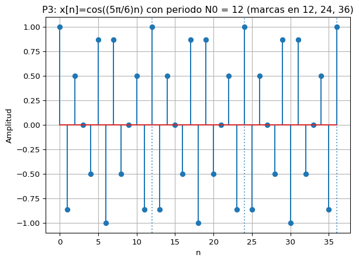
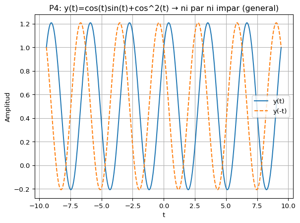

import numpy as np
import matplotlib.pyplot as plt
t = np.linspace(-1, 3, 4000)
x = np.cos(2*np.pi*t) + 0.5*np.cos(4*np.pi*t)
y = np.cos(2*np.pi*(0.5*(t-0.2))) + 0.5*np.cos(4*np.pi*(0.5*(t-0.2)))
plt.figure()
plt.plot(t, x, label="x(t)")
plt.plot(t, y, label="y(t)=x(0.5*(t-0.2))", linestyle="--")
plt.title("P1: Escala temporal (expansión ×2) y desplazamiento +0.2 s")
plt.xlabel("t [s]")
plt.ylabel("Amplitud")
plt.legend()
plt.grid(True)
plt.show()Examen resuelto con justificación matemática y ejemplos en Python
1 Instrucciones
Este documento resuelve el examen adjunto. Cada pregunta incluye: enunciado resumido, respuesta(s) correctas, justificación matemática y un ejemplo en Python que ilustra visualmente los conceptos. Las gráficas se generan con matplotlib (sin estilos ni colores específicos).
2 Pregunta 1 — Escala y desplazamiento temporal
Enunciado (resumen): \(y(t) = x\!\left(0.5\,(t-0.2)\right)\).
Respuesta correcta: A y B.
2.1 Justificación matemática
- Forma general: \(y(t) = x\big(a\,(t-t_0)\big)\).
- Si \(0 < a < 1\), hay expansión temporal por factor \(1/a\). Aquí \(a=0.5\Rightarrow\) expansión por 2.
- El término \(t-t_0\) implica desplazamiento hacia la derecha en \(t_0\) (aparece más tarde). Aquí \(t_0 = 0.2\ \text{s}\).
- No hay reflexión temporal porque no aparece \(-t\).
2.2 Ejemplo en Python
3 Pregunta 2 — Periodicidad de suma de cosenos
Enunciado: \(x(t)=\cos(2\pi\cdot 0.25\,t)+\cos(2\pi\cdot 0.5\,t)\).
Respuestas correctas: A, B y E.
3.1 Justificación matemática
- Frecuencias: \(f_1=0.25\ \text{Hz}\Rightarrow T_1=4\ \text{s}\);\(f_2=0.5\ \text{Hz}\Rightarrow T_2=2\ \text{s}\).
- La suma de cosenos es periódica si la razón \(f_2/f_1\) es racional; aquí \(0.5/0.25=2\).
- El periodo fundamental es \(T_0=\mathrm{mcm}(T_1,T_2)=\mathrm{mcm}(4,2)=4\ \text{s}\).
- Cualquier múltiplo entero de \(T_0\) (p. ej., \(8\ \text{s}\)) también es periodo.
3.2 Ejemplo en Python
import numpy as np
import matplotlib.pyplot as plt
t = np.linspace(0, 12, 6000)
x = np.cos(2*np.pi*0.25*t) + np.cos(2*np.pi*0.5*t)
plt.figure()
plt.plot(t, x, label="x(t)")
for Tmark in [4, 8, 12]:
plt.axvline(Tmark, linestyle=":", alpha=0.7)
plt.title("P2: Periodicidad con T0 = 4 s (líneas punteadas en múltiplos)")
plt.xlabel("t [s]")
plt.ylabel("Amplitud")
plt.grid(True)
plt.legend()
plt.show()4 Pregunta 3 — Periodicidad en tiempo discreto
Enunciado: \(x[n]=\cos\!\left(\frac{5\pi}{6}\,n\right)\).
Respuestas correctas: A y B (período fundamental \(N_0=12\) y sus múltiplos).
4.1 Justificación matemática
Una señal \(x[n]=\cos(\omega_0 n)\) es periódica si existe \(N\in\mathbb{Z}^+\) tal que \(\omega_0 N=2\pi k\), \(k\in\mathbb{Z}\).
\[\frac{5\pi}{6}N=2\pi k \;\Longrightarrow\; \frac{5N}{6}=2k \;\Longrightarrow\; 5N=12k.\]
El menor \(N\) que satisface esto es \(N_0=12\) (con \(k=5\)).
4.2 Ejemplo en Python
import numpy as np
import matplotlib.pyplot as plt
n = np.arange(0, 37)
x = np.cos((5 * np.pi / 6) * n)
plt.figure()
markerline, stemlines, baseline = plt.stem(n, x)
plt.title("P3: x[n]=cos((5π/6)n) con periodo N0 = 12 (marcas en 12, 24, 36)")
plt.xlabel("n")
plt.ylabel("Amplitud")
for Nmark in [12, 24, 36]:
plt.axvline(Nmark, linestyle=":", alpha=0.7)
plt.grid(True)
plt.show()
5 Pregunta 4 — Paridad: productos y suma
Enunciado: \(y(t)=x_p(t)\,x_i(t)+x_p^2(t)\), con \(x_p\) par y \(x_i\) impar.
Respuestas correctas: C y D.
5.1 Justificación matemática
- Producto par·impar → impar. Producto par·par → par.
Por tanto \(y(t)=\underbrace{\text{impar}}_{x_p x_i}+\underbrace{\text{par}}_{x_p^2}\). - La suma de una función par y una impar es ni par ni impar en general.
- Caso particular: si \(x_i(t)=0\Rightarrow y(t)=x_p^2(t)\), que es par.
5.2 Ejemplo en Python
import numpy as np
import matplotlib.pyplot as plt
t = np.linspace(-3*np.pi, 3*np.pi, 4000)
xp = np.cos(t) # par
xi = np.sin(t) # impar
y = xp*xi + xp**2
y_neg = np.cos(-t)*np.sin(-t) + np.cos(-t)**2 # y(-t)
plt.figure()
plt.plot(t, y, label="y(t)")
plt.plot(t, y_neg, linestyle="--", label="y(-t)")
plt.title("P4: y(t)=cos(t)sin(t)+cos^2(t) → ni par ni impar (general)")
plt.xlabel("t")
plt.ylabel("Amplitud")
plt.legend()
plt.grid(True)
plt.show()
# Caso especial: xi(t)=0 ⇒ y(t)=xp^2(t) es par
plt.figure()
plt.plot(t, xp**2, label="y(t)=cos^2(t) (par)")
plt.title("P4 (caso especial): si xi(t)=0 ⇒ y(t)=cos^2(t) es par")
plt.xlabel("t")
plt.ylabel("Amplitud")
plt.legend()
plt.grid(True)
plt.show()
6 Pregunta 5 — Pulso rectangular con escalones de Heaviside
Enunciado: pulso de amplitud \(2\) activo entre \(t=1\) y \(t=1.2\ \text{s}\).
Respuestas correctas: A y D (formas equivalentes de \(2\,[u(t-1)-u(t-1.2)]\)).
6.1 Justificación matemática
- Representación estándar de un rectángulo activo en \([t_1,t_2)\) con amplitud \(A\): \[A\,[u(t-t_1)-u(t-t_2)].\]
- Con \(A=2\), \(t_1=1\), \(t_2=1.2\): \[2\,[u(t-1)-u(t-1.2)].\]
6.2 Ejemplo en Python
import numpy as np
import matplotlib.pyplot as plt
def u(t):
return (t >= 0).astype(float)
t = np.linspace(0, 2, 4000)
rect = 2*(u(t-1) - u(t-1.2))
plt.figure()
plt.plot(t, rect)
plt.title("P5: Pulso rectangular 2[u(t-1) - u(t-1.2)]")
plt.xlabel("t [s]")
plt.ylabel("Amplitud")
plt.grid(True)
plt.show()